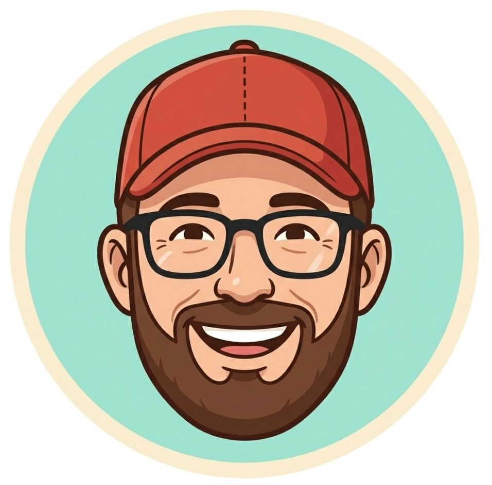

Sotto Orzinuovi scorre l'acqua: la governi scrivendo comandi, una valvola alla volta.

«L'hai vista la mia story? Zero sprechi è una promessa — ma da solo non ce la faccio. Mi serve un apprendista in gamba: scendi con me nel sottosuolo!»
La rete di Orzinuovi
modalità docente
Luigi: «Scegli un tombino! Completa una missione per ricevere il codice della successiva.»